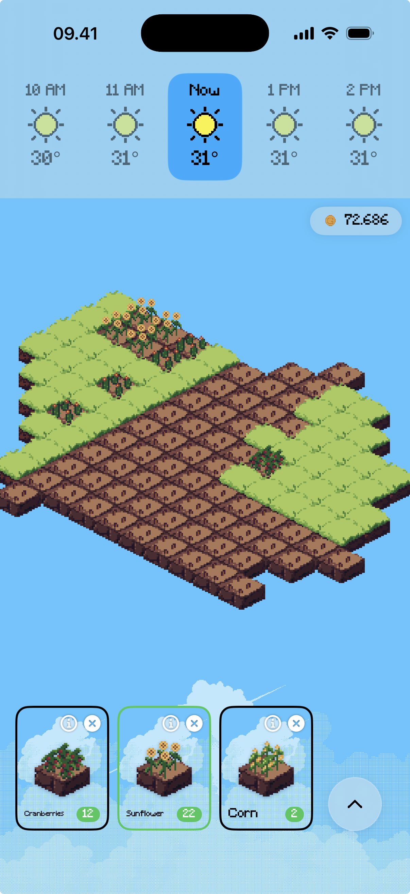
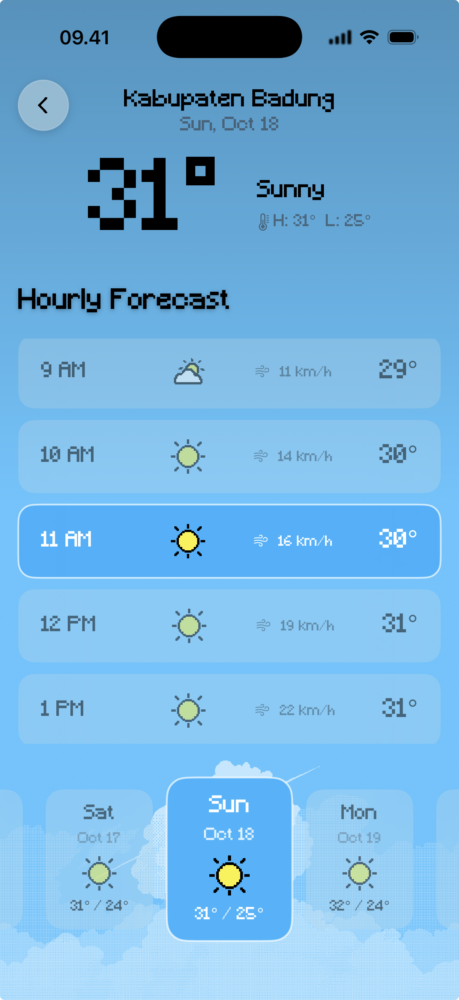

Systems design case study
Nimbus Harvest
What if today’s real weather decided what grew in your farm?

Design notes
The forecast is the game system
Nimbus Harvest is a cozy pixel-art farming game driven by the player’s local forecast. The sky on the farm mirrors the sky outside: sunshine, clouds, rain, snow, wind, and heat all affect crop growth.
Weather becomes a planning decision
Each crop prefers different conditions. Planting is therefore a choice about the real forecast, not a decorative weather effect. A sunny afternoon, a coming storm, or a cold spell changes which crop makes sense next.
Released and supported
The game shipped on the App Store, is available in the European Union, and received one post-launch patch.
